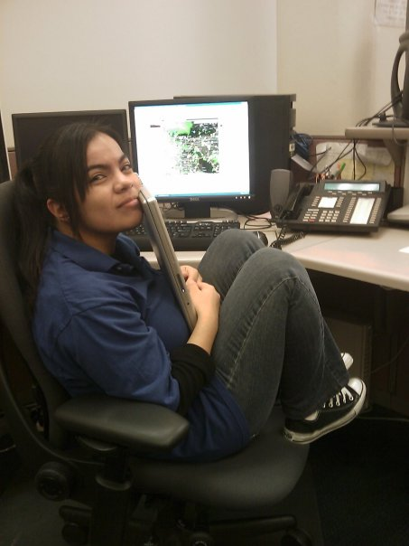

Featured: Nothing yet!

- NAVIGATION
EXTRAS
Welcome to the front page of this site. Read on to learn more!
If you're looking for the link to the final project, it doesn't work anymore because they took PERL/CGI off the host server.
Q: Why'd you make this site?
A: I made it for a class. It's simply here for my own learning experience and hopefully your own too!
Q: How long did you take on this?
A: A while, about 2 hours or so to write the style sheet, since I decided to write my own 3 column layout
from scratch while following a tutorial I found. Came out nice with a lot of tweaking. I think so anyway.
Q: Which skyline is that?
A: That's New York I believe.

Diana Arrieta